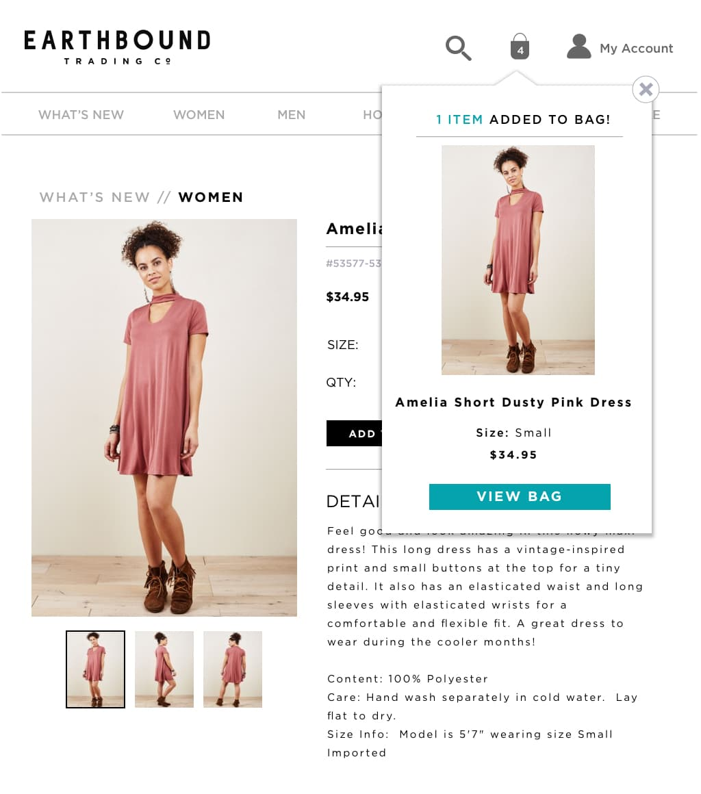
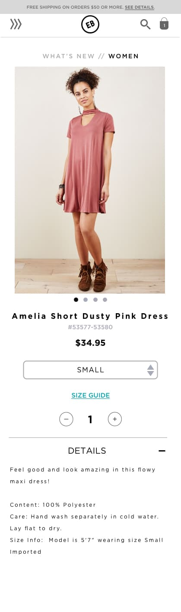

Popup cart
earthboundtrading.com
The popup cart provides reassurance when customers take action to add a product to their cart, and it removes unpleasant barriers that inhibit customers from continuing to shop.

Desktop
Mobile
The challenge
Since the website was built three years ago, the cart to checkout remained untouched from its 'out of the box' functionality and design. We received feedback from customer service and internal employees that it was annoying to add a product to the cart and then to be directed to the cart page. Only on the cart page could users select product amounts or make any edits to their cart. For a user to continue shopping, they had to use the browser arrows to retrace their last position or use a 'Continue Shopping' button in the cart that dropped users off out of sequence.
Research and discovery
When researching how competitors and modern eCommerce websites approached their add to cart functionality, popup carts was prevalent and the solution.
The companies that did implement this functionality differentiated themselves by how much product information they displayed and how much users could control it.
During this requirements-gathering phase, we kept a list of aspects we liked and prioritized what would be easy to adapt to our current technical limitations and what would be the least invasive to users.
Sketching wireframes
Our top priority was keeping mobile simple and adapting the popup cart for our mobile users who tend to move quickly. Based on our research and some testing we decided to make the popup cart minimal on mobile, which resulted in one line of text and a link.
We also made the popup cart and checkout button on mobile sticky to the screen so users could quickly checkout.
Other than viewing back or checking buttons we decided to keep the popup cart static and uneditable. We didn't like the default functionality of the popup taking over the user's screen so we pushed it off to the side so users could continue uninhibited.
Here's what the plugin looks like out of the box.
Popup cart currently on desktop
Popup cart currently on mobile
Sketch of popup cart for desktop
Sketch of popup cart for mobile
Working with limitations
Business restrictions limited us to only a few plugin options that work with our older Magento platform. As the front end dev who would implement these changes I was able to inform the team what was possible from the start. It was invaluable working together every step of the way so that we did not waste time on ideas that wouldn't work. And on the flip side, when there was a workable idea, I could offer ways to embellish it that they otherwise would not have known.
This implementation is currently in development as I work with our Magento agency for the backend support I need.